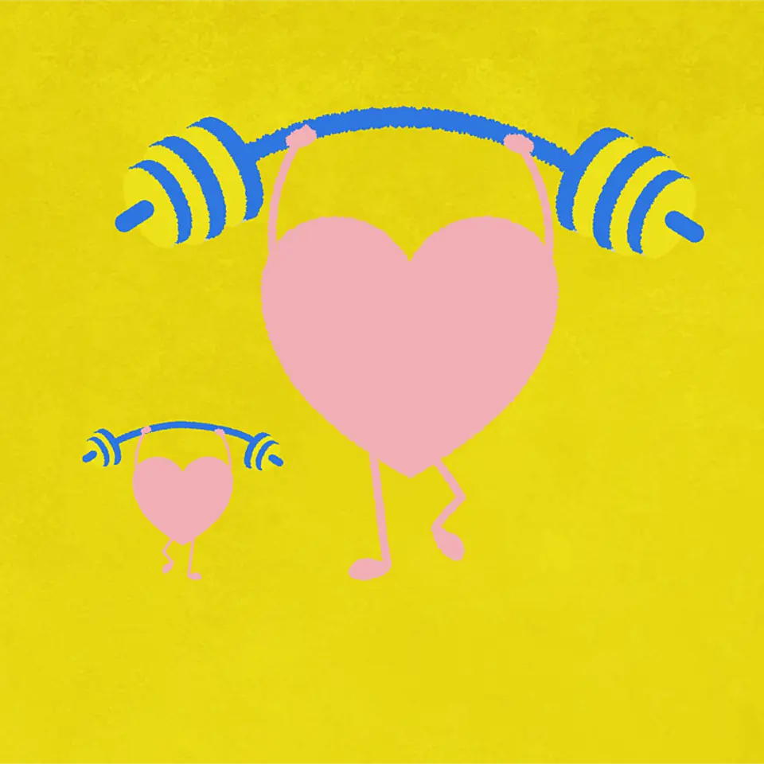
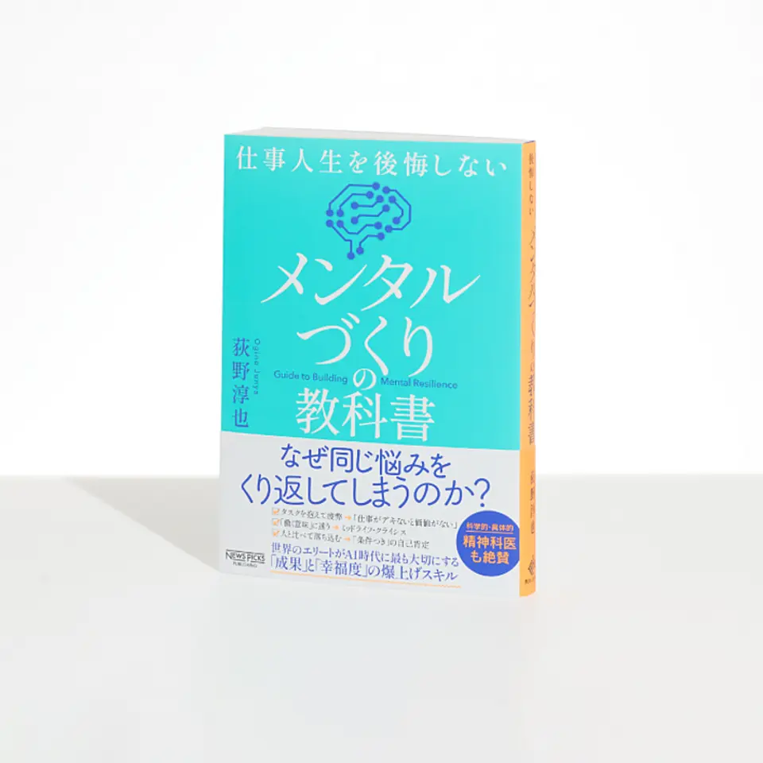
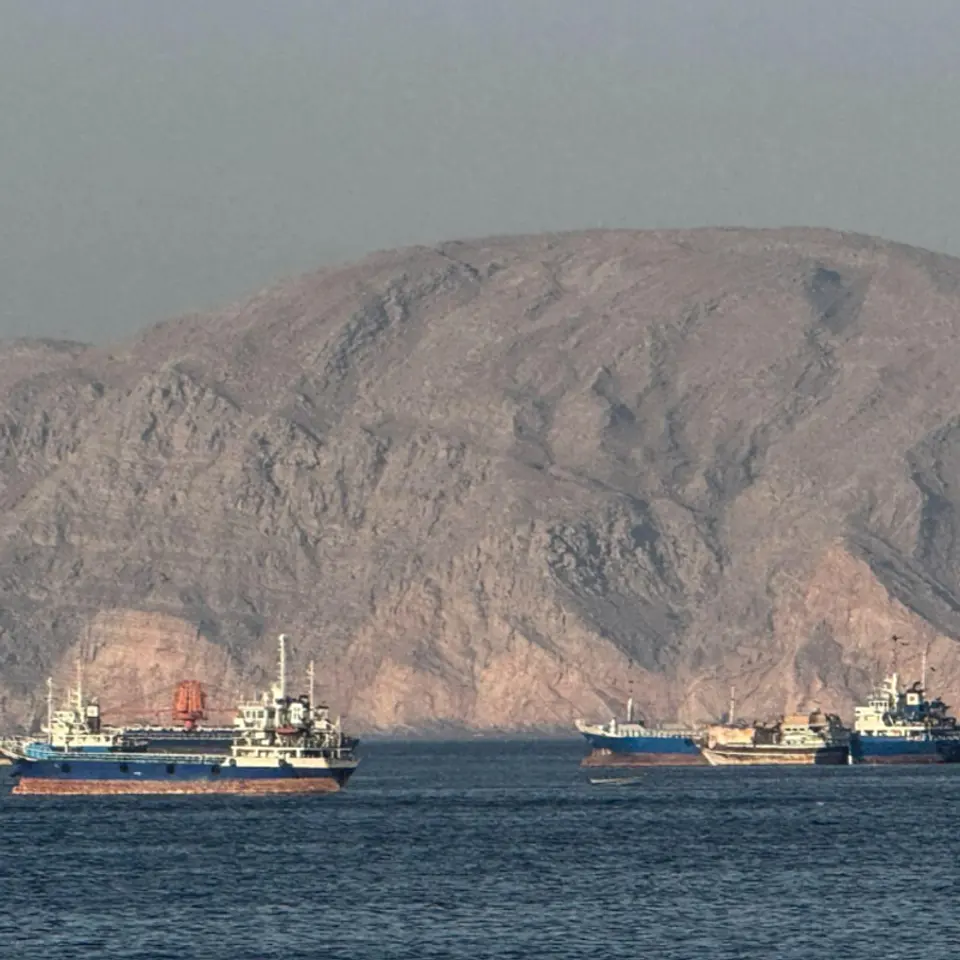

記事別メモ
1. 【新時代】米国で「無職の彼氏」を養う女性が増加中
発行日時: 2026/08/10 05:30:03 JST
あなたに関係ありそうな理由: 雇用の変化を性別の話題だけで終わらせず、産業構造・育成・家計の変化として読む視点が、人材や事業の見通しに役立つから。
米国では2026年初め、給与台帳に載る就業者数で女性が男性を上回った。記事はこれを単純な「女性の躍進」ではなく、雇用が伸びる業種と縮む業種のずれとして読む。近年の雇用増の中心には医療・社会福祉があり、同分野では女性の比率が78.9％に達する。2023年7月から2025年7月までに同分野の雇用は180万人増え、2024年2月から2026年2月までの全雇用増120万人のうち、女性が約3分の2を占めたという。一方、男性が多い建設、製造、輸送といった分野は、景気や自動化、需要の変化の影響を受けやすい。家計の主な稼ぎ手が入れ替わることは、結婚、育児、介護、住む場所、再就職の選択にも波及する。記事は、働く女性が増えたことを個人の意識変化だけで説明せず、ケア需要の拡大と雇用機会の所在を重ねて示す。NewsPicksのコメントでは、給与台帳の統計には自営業、農業、軍人などが含まれず、見出しほど単純な比較ではないとの注意が出た。また、男性の就労率低下を怠惰と決めつけず、学び直しや地域の仕事の受け皿まで見るべきだという意見もあった。重要なのは、雇用人数の優劣ではない。どの仕事が増え、誰がそこへ移れるのか、賃金、技能、ケアの負担を含めて捉えることである。企業側には、性別を前提に職務を分けるのではなく、成長分野へ移るための育成、柔軟な勤務、再挑戦の機会を設計する課題がある。家計や組織の将来像を考える時も、人数の順位より、変化する仕事へのアクセスを問う方が実態に近づく。採用計画でも、足元で人が集まりにくい職種だけを補う発想では足りない。現在の仕事で使っている技能のうち、ケア、顧客対応、調整、デジタル活用のどれが隣接する成長分野へ持ち運べるかを見立てる必要がある。個人にとっても、世帯内の役割が変わることを例外扱いせず、収入の変動、休業、学び直しの費用を二人で話せることが、変化への耐性になる。統計の対象外を確かめた上で、雇用の増減を産業、地域、年齢別に見ると、誰に移行支援が必要かをより具体的に議論できる。統計は大きな流れを示すが、現場での答えは、固定観念を外して移動できる仕組みを持てるかどうかにある。
仕事や会話で使える一言: 雇用の男女差は意識の変化だけでなく、どの産業が人を必要としているかから読むと見え方が変わります。
NewsPicks原文を読む
2. 【親子で実践】お盆期間は子どもの「情緒を整える」絶好期だ
発行日時: 2026/08/10 05:30:04 JST
あなたに関係ありそうな理由: 休暇中の親子時間を、予定を詰めるだけでなく、子どもが自分の感情や価値観を言葉にできる場として使うヒントになるから。
お盆休みを、子どもの情緒を整えるための「特別な訓練期間」として使おうという記事である。軸に置くのは、困ってから治療するのではなく、日常から心の状態を整える「メンタルフィットネス」という考え方だ。記事は、これは確立した単独学問の名称というより、心理学、精神医学、公衆衛生、行動科学を横断して、予防的に心の健康を扱うための実践的な枠組みだと説明する。親がすぐに正解を教えるより、子どもが何に困り、何を大切にしているのかを聞き取ることが出発点になる。たとえば塾を休みたいという言葉を、怠けと決めつけるのではなく、疲れ、不安、友人関係、本人の優先順位を一緒に確かめる。感情を否定せず受け止めてもらえる経験は、自己理解と心理的安全性につながる。親も完璧な助言者である必要はない。自分の失敗や迷いを適度に語り、誤った時には謝る姿を見せることが、子どもに「困った時に話してよい」という許可を与える。さらに記事は、親子だけで閉じず、祖父母、親戚、地域の大人など、別の大人とつながる逃げ道を持たせる重要性を挙げる。家庭内で話しにくい悩みでも、関係の違う大人には言葉にできることがあるからだ。コメントでも、休暇を成果のための追加課題にせず、対話の時間にするという受け止めが多かった。一方で、親の余裕がなければ対話は続かない。長い説教や一度きりの面談ではなく、散歩、食事、移動中の短い会話を積み重ねる方が現実的だろう。休みの価値は、何を達成したかだけでなく、子どもが自分の状態を把握し、助けを求められる関係を残せたかにある。実践では、親が質問を連発するより、まず自分が今日どう疲れたか、何が楽しかったかを短く話すと、子どもも返しやすい。返事がなくても、沈黙を失敗とみなさないことが大切だ。話す相手を家族だけに限定しないなら、休暇中の親戚との時間も、進路や成績を尋ねる場ではなく、好きなことや困った時の相談先を増やす機会に変えられる。大人が答えを急がず、感情に名前を付ける手伝いをするだけでも、子どもが後から相談しやすくなる。親の不安を子どもへそのまま預けず、必要なら親自身にも相談相手を持つことが、穏やかな関係を続ける条件になる。

仕事や会話で使える一言: 子どもの「休みたい」は結論ではなく、状態を一緒に確かめる会話の入口にできます。
NewsPicks原文を読む
3. 「童心に返る」企業研修のすすめ
発行日時: 2026/08/10 05:20:00 JST
あなたに関係ありそうな理由: 研修や会議を「楽しかった」で終わらせず、普段は話さない人が関係をつくり、本音の対話に入れる設計として考える材料になるから。
職場の孤立感を和らげるために、企業が大人向けの「遊び」を研修へ取り入れる動きが広がっているというウォール・ストリート・ジャーナルの記事だ。リモートワークの定着や若手の人間関係の希薄化で、飲み会や食事会だけではつながりを作りにくい。そこで企業は、アーケードゲーム、工作、子ども向け博物館、玉入れや二人三脚のような活動を、チームのオフサイトに組み込む。狙いは単に童心へ戻ることではない。話すこと自体を目的にすると、初対面の人や上下関係がある場では緊張が先に立つ。共通の作業や少しばかりの失敗を挟むことで、会話のきっかけができ、普段の役職や専門性から一度離れられる。競争性の弱い遊びなら、誰かだけが上手くなるより、「全員が少し不慣れ」という平らな状態を作りやすい。記事は、酒席のように参加しにくい人を残したり、飲み過ぎで終わったりするリスクを避ける点も示している。博物館やファシリテーター側も、企業向けに大人のイベントを提供し、活動の後に振り返りや戦略対話を置く。コメントでは、遊びそのものより、その後に何を言語化するかが重要だという指摘が目立った。たとえば、活動中に誰が声をかけたか、失敗が起きた時にどう助けたかを振り返れば、日常業務の協働へ翻訳できる。反対に、強制参加や内輪だけが盛り上がる設計なら、孤立感を強めかねない。研修を作る側は、目的を「盛り上げること」に置かず、参加しやすさ、心理的安全性、対話へ戻る導線まで設計したい。遊びは信頼を直接つくる魔法ではないが、信頼を育てる会話の入口にはなり得る。実施後には、楽しかった人だけの感想で終えず、参加しにくかった点、普段話さない相手と話せたか、仕事へ持ち帰れる気づきは何かを匿名でも集めるとよい。次の会議で一つだけ、活動で見えた助け合いの行動を試すところまで決めれば、研修は単発の福利厚生ではなくなる。時間や体力、家庭事情によって参加しづらい人にも選べる形を用意し、欠席しても不利益がないことを明確にする。その配慮自体が、組織が安心を扱う姿勢として伝わる。活動前に目的と参加の選択肢を共有し、終わった後に少人数で経験を言葉にする時間を置けば、参加した意味を個々人が持ち帰りやすい。
仕事や会話で使える一言: 研修の価値は、遊びの後に日常の協働をどう振り返れるかで決まります。
NewsPicks原文を読む
4. 【必修】科学がついに明かした「心穏やか」に働くことの価値
発行日時: 2026/08/10 05:30:02 JST
あなたに関係ありそうな理由: 仕事の成果を気合いや緊張だけに頼らず、安心して考え、相談し、創造できる状態を個人とチームでどう作るか考える手掛かりになるから。
仕事で良い状態にあることを、「やる気が高い」「興奮している」と同一視しがちな見方を問い直す記事である。紹介されるのは、安心、穏やかさ、満足といった低覚醒ポジティブ感情、LAPAという概念だ。従来のポジティブ感情の研究は、活力や熱狂のような高覚醒ポジティブ感情、HAPAを中心に測りやすかった。そのため、落ち着いていることは、単に興奮が足りない状態のように扱われがちだった。記事によれば、2024年に226本の研究を統合したレビューでは、比較された研究の89％でLAPAとHAPAの違いが確認された。LAPAは脳活動、心血管の健康、意思決定、記憶、マインドフルネス、孤独への向き合い方などと独自の関連を示したという。世界12カ国、約2800人への調査でも、幸せを内面の状態として語る人は、活力より安らぎや調和、満足を多く挙げた。職場で重要なのは、安心と成果を対立させないことだ。適度な緊張が力を引き出す場面はあるが、脅威や評価への恐怖が続けば、注意や発想、相談の余地を狭める。記事は、ゆっくり呼吸する、声の調子を穏やかにする、信頼できる人に話す、感謝を伝えるといった小さな行為が、安全だと感じる状態を支える可能性を説明する。個人のセルフケアだけに押し付けず、上司が失敗を責めず次を一緒に考えること、雑談や相談を許すことも大切になる。コメントでは、顧客との面談でも過度な高揚より安心できる雰囲気の方が、長い関係や自己開示につながるという実感が寄せられた。心の安定は甘さではなく、継続的に考え、協働し、成果を出すための基盤として扱いたい。会議や面談では、急いで答えを出す前に、何が不確かで誰が困っているかを共有する数分を置くことも有効だろう。上司が常に明るく振る舞う必要はないが、疑問や失敗を持ち込んでも関係が壊れないと示す必要はある。個人は自分の緊張の兆しを把握し、休息や相談を後回しにしない。組織は業務量、評価の伝え方、相談の経路を見直す。成果を見る側も、短期の活気だけでなく、相談や集中が持続しているかを確かめたい。静かな集中が必要な仕事と、勢いが必要な仕事を区別して初めて、感情を一つの理想像に押し込めずに済む。

仕事や会話で使える一言: 緊張を高めることと、脅威を与えることは別物です。安心感は成果の土台になり得ます。
NewsPicks原文を読む
5. 【世界のニュース7選】ホルムズ海峡 新航路巡る合意間近か
発行日時: 2026/08/10 17:00:07 JST
あなたに関係ありそうな理由: 国際情勢を単発の見出しで追わず、海上輸送、エネルギー、物価、中国経済、自然災害までを短時間で俯瞰する入口になるから。
エコノミストの短報をNewsPicksが翻訳した、8月10日の世界ニュース7選である。中心はホルムズ海峡だ。イランのアラグチ外相は、オマーンとの新航路に関する合意が近いとの見方を示した一方、暫定和平合意への違反を理由に、当面は米国との直接協議に応じない姿勢も示した。海峡が開くかどうかは、原油の輸送、燃料価格、保険料、物流に連なるため、軍事ニュースだけではない。記事は、イラン国内の治安部門人事や、フーシ派によるサウジアラビアのジザン製油所へのドローン攻撃も併せて伝える。フーシ派はモカ近郊も攻撃し、死者が出たとされる。停戦や航路の話があっても、周辺の緊張が同時に下がるとは限らないという構図だ。ほかに、麻薬密売や殺人で告発されているとされるキナハン容疑者が、UAEからアイルランドへ引き渡された件、中国東部に上陸した台風で100万人超が避難し、上海だけで1500便以上が欠航した件が並ぶ。中国では、生産者物価指数が前年同月比3.5％上昇、消費者物価指数は0.5％上昇にとどまり、石油価格の下落が指標を押し下げたとされる。イスラエルは、ハマスの完全な武装解除まで撤退しないとして、米国主導のガザ和平計画を改めて拒んだ。最後には英国の送電線計画が、映画のロケ地にある「ハリー・ポッター」のドビーの墓を避ける形で変更された話も置かれる。コメントは、国際ニュースを短時間で追う素材としての企画意図を補足していた。7本を一つの結論にまとめるより、航路、災害、物価、紛争、社会的合意がそれぞれ別の速度で動いていると理解することが大切だ。事業や家計では、原油価格と物流のように自分へ伝わる経路を決め、継続して追いたい。見る順番を決めるなら、まず海峡の通航と原油市場、次に輸送や保険の実務への波及、さらに自社や家計の燃料費・仕入れへの影響を分けると混乱しにくい。災害や紛争では、最初の数字が更新されることも前提に置き、単発の速報を確定情報として扱わない姿勢も必要だ。日々の更新を追う際は、情報源の発表時点と、事実が起きた時点を分けて確認したい。七つの短報は答えをくれるものではなく、どの事象を追加確認すべきかを示す地図として使うとよい。

仕事や会話で使える一言: 海峡のニュースは、地政学だけでなく燃料、物流、物価へどう伝わるかまで追うと実務に近づきます。
NewsPicks原文を読む